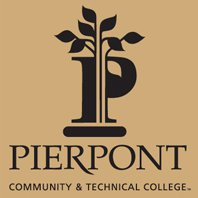

Chemical Engineering
Michael graduated at the top of his class in Chemical Engineering from West Virginia University in 2017. During his senior year, he was named a WVU Foundation Outstanding Senior, an award only handed out to the top 1% of the graduating class for the entirety of West Virginia University.
From June 2017 to July 2021, Michael worked for BHE GT&S (Berkshire Hathaway Energy, Gas Transmission & Storage), formerly Dominion Energy Transmission, Inc., a natural gas transmission company along the east coast. During his time with the company, Michael worked as a Gas Measurement Engineer performing both capital project and data science work. Notable projects included working on a Big Data solution towards LAUFG (Lost and Unaccounted For Gas), creating a system to identify and correct data quality issues with test reports, and supporting several field installations.
During the Spring of 2020 and 2021, Michael taught Gas Measurement as an Adjunct Professor in Pierpont Community & Technical College's Petroleum Technology Program to give back knowledge to the next generation of natural gas technical professionals in his home state of West Virginia.